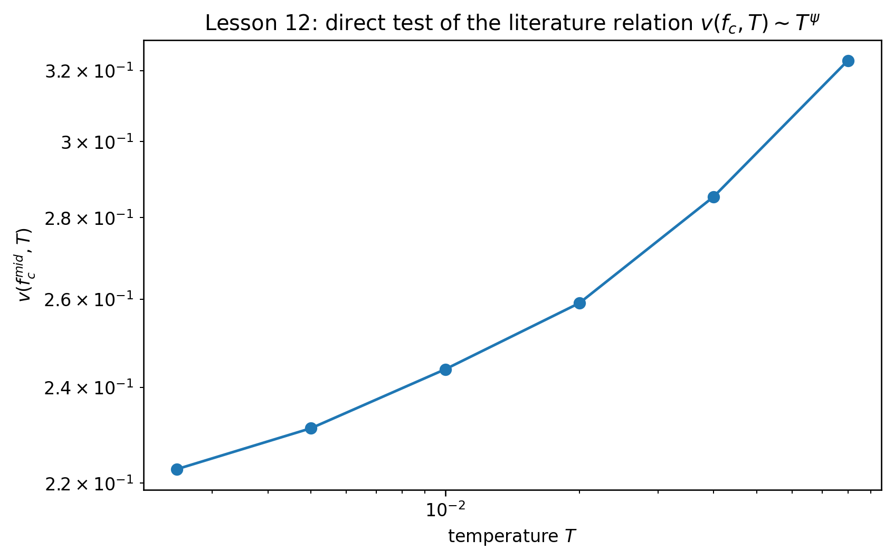
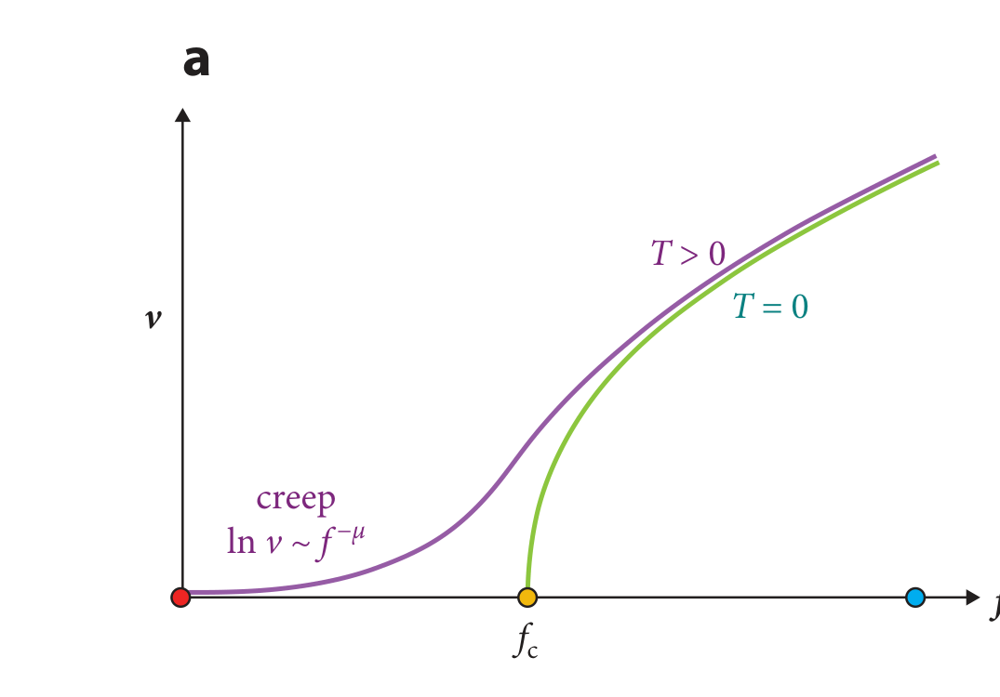
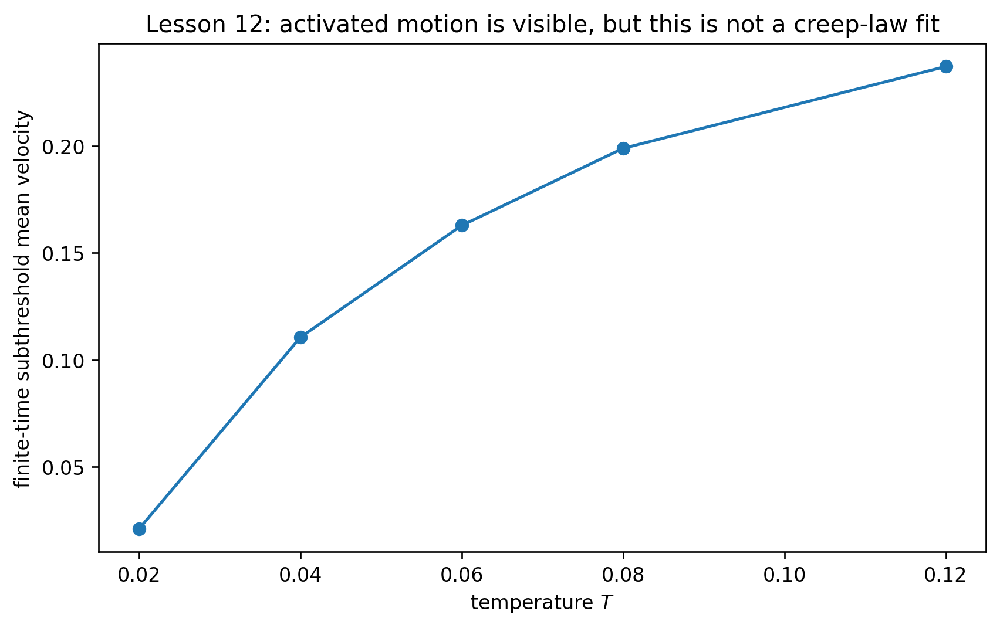
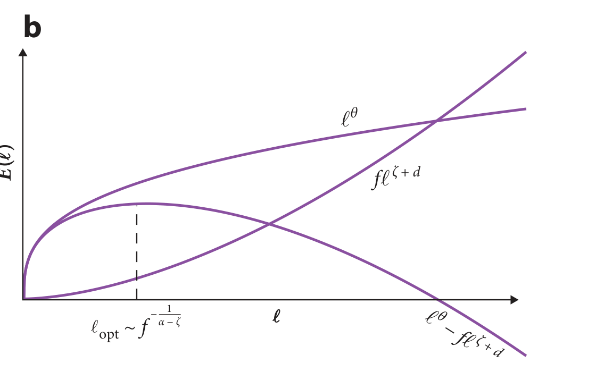
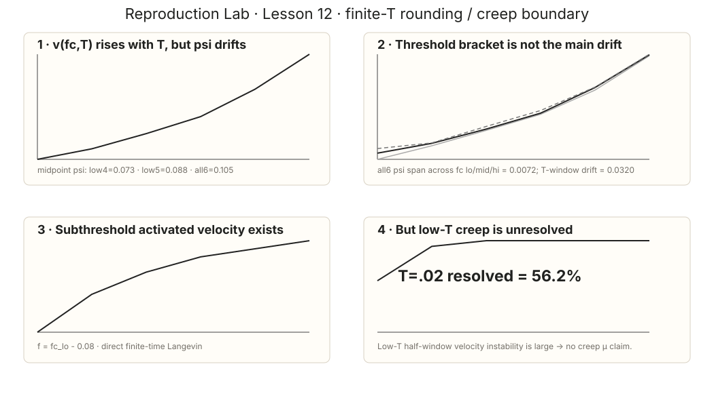

Learning Sliding Ferroelectricity / Reproduction Lab / Lesson 12
Paper2-orientedsource ↔ estimator mapping
把错误的 PRE Fig.6 拿掉：thermal rounding 和 creep 各用真正对应的文献图
这次不是修清晰度，而是修证据。先用 transport map 定义 ψ，再用 2021 creep review 定义低驱动热激活的渐近含义；我们的结果分别回答“ψ 对温度窗稳定吗”和“最低温轨迹真的解析到 creep asymptotic 了吗”。
L12 旧版存在实质性证据错误：它把 Ferrero PRE 2013 Fig.6 写成 thermal rounding；实际 Fig.6 是不同 disorder variants 的 critical velocity relaxation。现在完全移除这条错误锚点。thermal rounding 用 Ferrero 2013 review Fig.1(b)；creep 用 Ferrero et al. 2021 review Fig.3(a) 与 Fig.4(b)。
0 · 一张正确的总地图：ψ、β、creep 在哪里？

1 · thermal rounding：论文关系和我们的轴完全对齐
v(f_c,T)\sim T^\psi

我们没有“看起来像 power law 就报 ψ”。同一数据用 low4 / low5 / all6 温度窗拟合：
| threshold authority | ψ low4 | ψ low5 | ψ all6 |
|---|---|---|---|
| f− | 0.081861 | 0.092425 | 0.108981 |
| midpoint | 0.073079 | 0.087862 | 0.105033 |
| f+ | 0.071115 | 0.084517 | 0.101828 |
BROWNIAN NOISE-NORMALIZATION GOLD TEST = PASS；SYNTHETIC THERMAL-EXPONENT GOLD TEST = PASS。
THERMAL-ROUNDING WINDOW GATE NOT PASSED。 midpoint window drift=0.031953 > 0.030，所以 UNIVERSAL PSI CLAIM = NOT AUTHORIZED。
2 · creep：先看真正对应的 finite-T velocity–force 图


3 · 为什么低温轨迹没收敛，就不能硬拟 μ？

| T | mean v | resolved trajectory fraction | median half-window relative diff |
|---|---|---|---|
| 0.020 | 0.020971 | 0.5625 | 3.102542 |
| 0.040 | 0.110550 | 0.9375 | 0.237538 |
| 0.060 | 0.162843 | 1.0000 | 0.117292 |
| 0.080 | 0.198881 | 1.0000 | 0.081750 |
| 0.120 | 0.237164 | 1.0000 | 0.046381 |
LOW-T CREEP ASYMPTOTIC RESOLVED = NO；CREEP-LAW / MU CLAIM = NOT AUTHORIZED。 最低温只有 56.25% trajectories 在观测窗内解析出 substantial motion，而且前后半窗 velocity 相差数倍。
4 · 完整数值图现在放在“验收”位置，而不是冒充论文复现

5 · 脚本、receipts 与 raw tables
lesson12_thermal_rounding.py · receipt · rounding raw (144 rows) · subthreshold raw (40 rows) · 回到 Research Track